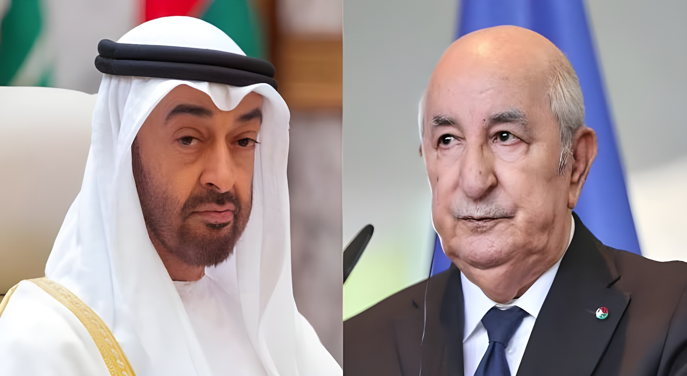

Jeudi 10 septembre 2026, Alger annonce la rupture de ses relations diplomatiques avec Abou Dhabi, dénonçant des « agissements provocateurs ou hostiles » de la part des Émirats arabes unis. L'ambassadeur émirati se voit accorder 48 heures pour quitter le territoire, tandis que l'espace aérien algérien se ferme aux appareils civils et militaires émiratis. Une décision spectaculaire qui vient clore plusieurs années de désaccords sur le Sahara occidental, le Sahel et la Libye, et qui constitue la deuxième rupture diplomatique majeure de l'Algérie en cinq ans, après celle avec le Maroc en 2021.
Le jeudi 10 septembre 2026, le ministère algérien des Affaires étrangères annonce, dans un communiqué relayé par l'agence officielle APS, la rupture des relations diplomatiques avec les Émirats arabes unis. Le texte affirme qu'Alger a fait preuve « d'une grande retenue et d'un sens élevé des responsabilités » face à « la multiplication des agissements provocateurs ou hostiles » de la partie émiratie, et qu'elle a décidé d'agir « après avoir épuisé toutes les voies permettant de préserver les relations bilatérales ». Aucun élément précis ni aucune preuve n'est toutefois avancé publiquement pour étayer ces accusations.
L'ambassadeur émirati à Alger est reçu le jour même au siège du ministère, où la décision lui est formellement notifiée, assortie d'un délai de 48 heures pour s'y conformer. Quelques heures plus tard, le ministère algérien de la Défense annonce la fermeture de l'espace aérien national, à compter de minuit le 11 septembre, à l'ensemble des aéronefs civils et militaires immatriculés aux Émirats arabes unis. Seuls les vols commerciaux reliant Alger à Dubaï échappent pour l'instant à cette mesure, leur maintien étant prévu jusqu'à la fin de l'année 2026.
La rupture ne surgit pas de nulle part. Dès le 7 février 2026, Alger avait engagé la procédure de dénonciation de la convention relative aux services aériens conclue avec les Émirats en 2013 et ratifiée l'année suivante, un texte qui permettait notamment à la compagnie Emirates de desservir Alger depuis Dubaï. Le préavis contractuel doit courir jusqu'au début de l'année 2027. Fin juillet, lors de son traditionnel point de presse, le président Abdelmadjid Tebboune avait publiquement qualifié les Émirats de « micro-État », affirmant qu'une rupture serait intervenue depuis longtemps si l'Algérie n'avait pas voulu éviter d'aggraver les divisions au sein du monde arabe.
Au-delà du différend bilatéral, la brouille reflète des désaccords stratégiques accumulés depuis plusieurs années. Sur le Sahara occidental, les deux pays défendent des positions opposées : les Émirats arabes unis reconnaissent la souveraineté marocaine sur ce territoire disputé et ont ouvert, dès novembre 2020, un consulat à Laâyoune — une première pour un pays arabe — tandis qu'Alger soutient de longue date le Front Polisario et son objectif d'autodétermination. Le président Tebboune a par ailleurs accusé à plusieurs reprises Abou Dhabi de chercher à déstabiliser plusieurs pays de la région, citant nommément le Mali, la Libye et le Soudan, où l'influence économique et politique émiratie s'est fortement accrue ces dernières années.
La question israélienne pèse également dans la relation. L'Algérie, qui n'a jamais reconnu Israël et soutient sans détour la cause palestinienne, observe avec méfiance le rapprochement des Émirats arabes unis avec l'État hébreu depuis les accords d'Abraham de 2020. Ce désaccord de fond, ajouté aux dossiers du Sahara et du Sahel, a fini par transformer une rivalité feutrée en rupture ouverte.
« Après avoir épuisé toutes les voies permettant de préserver les relations bilatérales, le gouvernement algérien a pris, ce jour, la décision de procéder à la rupture des relations diplomatiques. »
— Ministère algérien des Affaires étrangères, 10 septembre 2026| Acteur | Position officielle | Intérêt réel |
|---|---|---|
| Algérie | « Agissements provocateurs et hostiles » des Émirats | Mettre fin à une influence émiratie jugée déstabilisatrice en Afrique du Nord et au Sahel |
| Émirats arabes unis | Espèrent une rupture « temporaire » | Préserver leurs relations économiques et leur image de médiateur régional |
| Maroc | Silence officiel | Observer l'isolement diplomatique croissant de son voisin algérien |
| Partis algériens (PT, RND, FFS) | Soutien quasi unanime à la décision | Consolider un front intérieur autour de la fermeté diplomatique |
Dans sa première réaction, le ministère émirati des Affaires étrangères indique espérer que la mesure algérienne ne soit que « temporaire », réaffirmant son attachement à des relations fondées sur « la préservation des liens entre les peuples » des deux pays. Sur les réseaux sociaux, le conseiller diplomatique de la présidence émiratie, Anwar Gargash, estime pour sa part que les relations entre États doivent reposer sur « la rationalité, la communication et la clarté des intérêts », plutôt que sur des signaux à décoder — une réponse qui, sans nier la gravité de la rupture, en minimise ouvertement la responsabilité émiratie.
En rompant avec les Émirats arabes unis cinq ans après avoir fait de même avec le Maroc, l'Algérie confirme une ligne diplomatique où la rupture devient un instrument à part entière de politique étrangère, quitte à réduire encore le nombre de ses partenaires régionaux. Le maintien provisoire des vols commerciaux vers Dubaï montre toutefois que même une rupture officielle n'efface pas d'un coup des intérêts économiques enchevêtrés. Reste à savoir si cette crise, qui s'ajoute à celles déjà ouvertes avec Rabat, Bamako ou Paris, contribuera à isoler Alger sur la scène régionale ou si elle renforcera, comme l'espère le pouvoir algérien, sa position de puissance qui n'hésite plus à trancher.